Recent Updates
IKS HORIZON 2025 — INTERNATIONAL CONFERENCE On INDIAN KNOWLEDGE SYSTEM
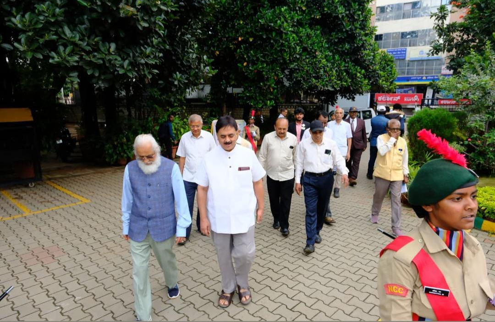
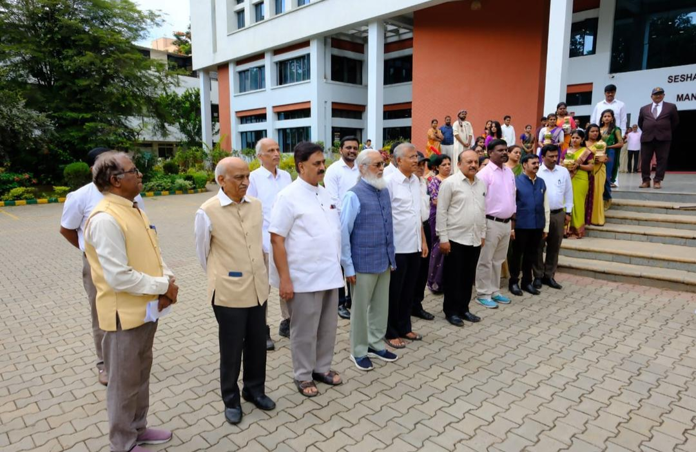
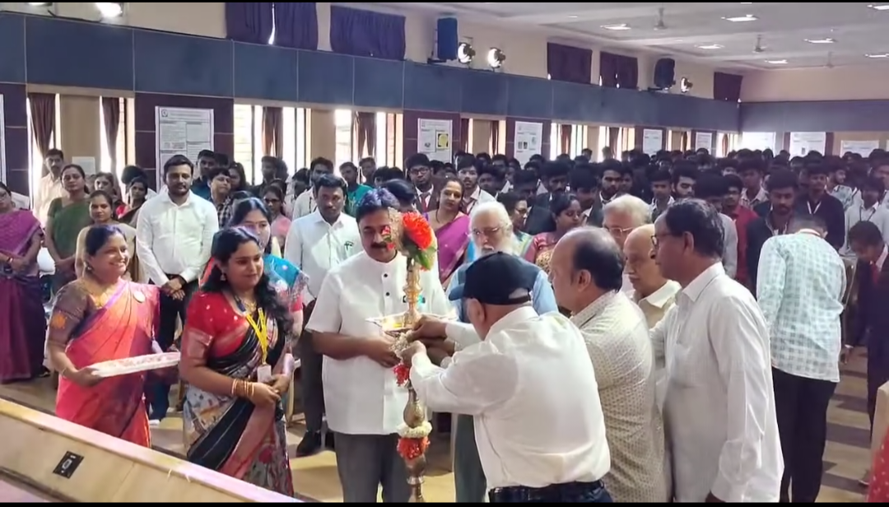
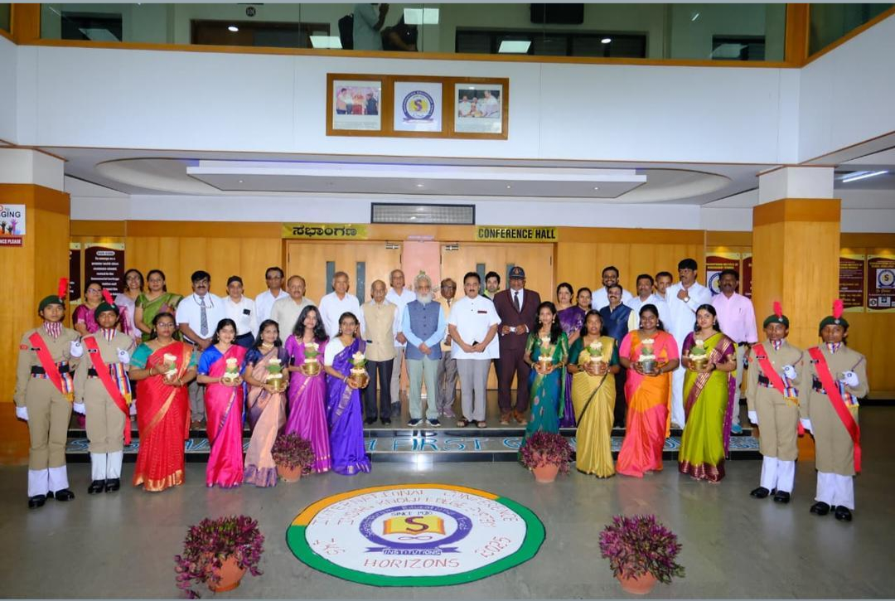
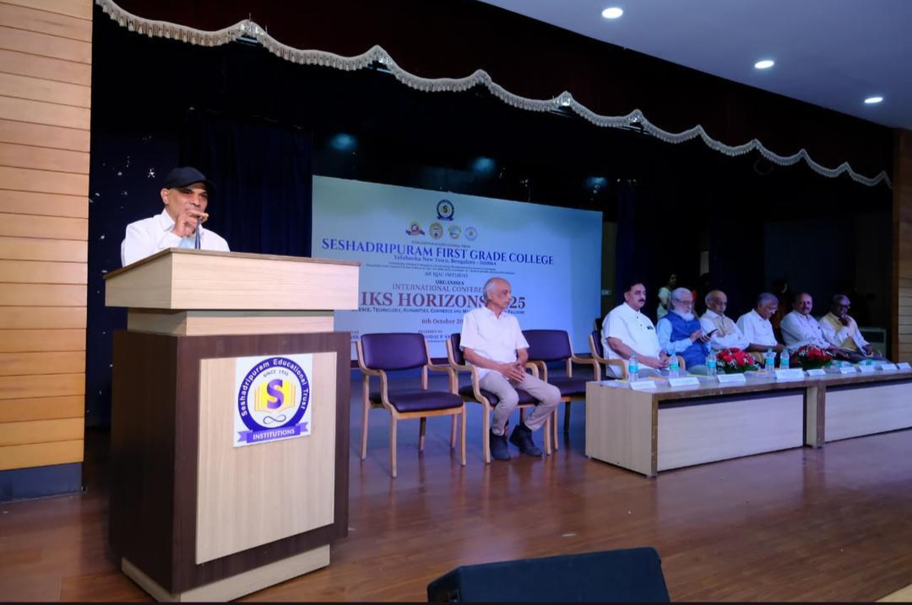
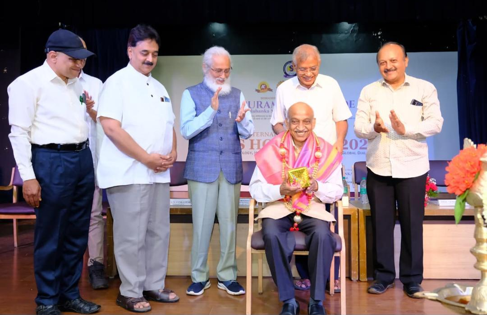
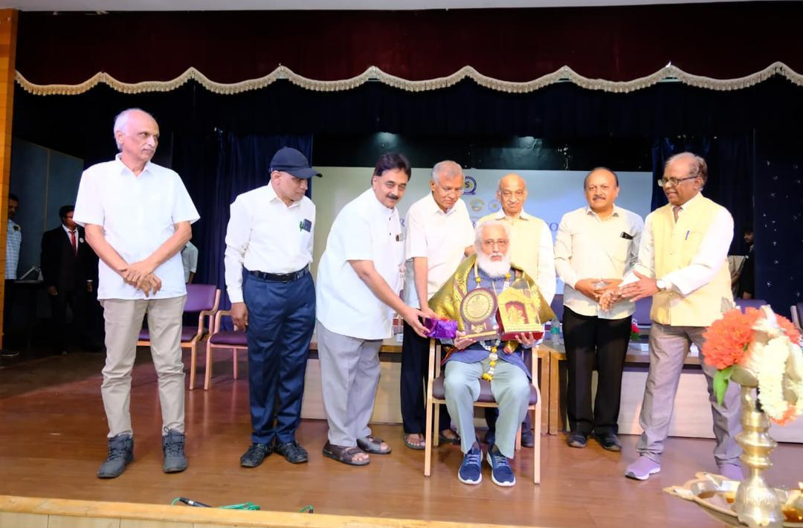
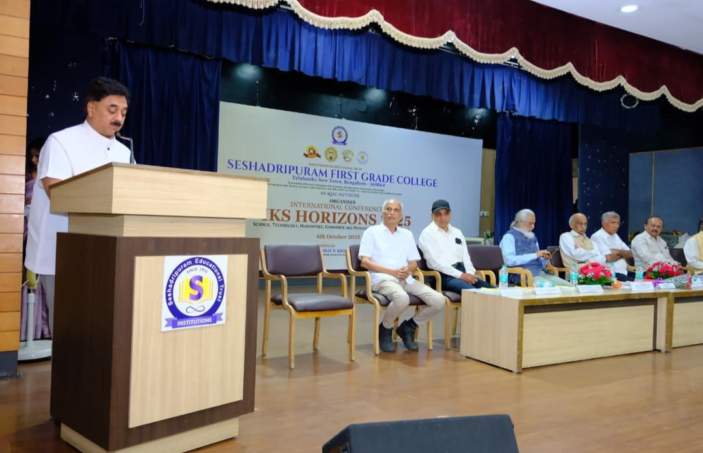
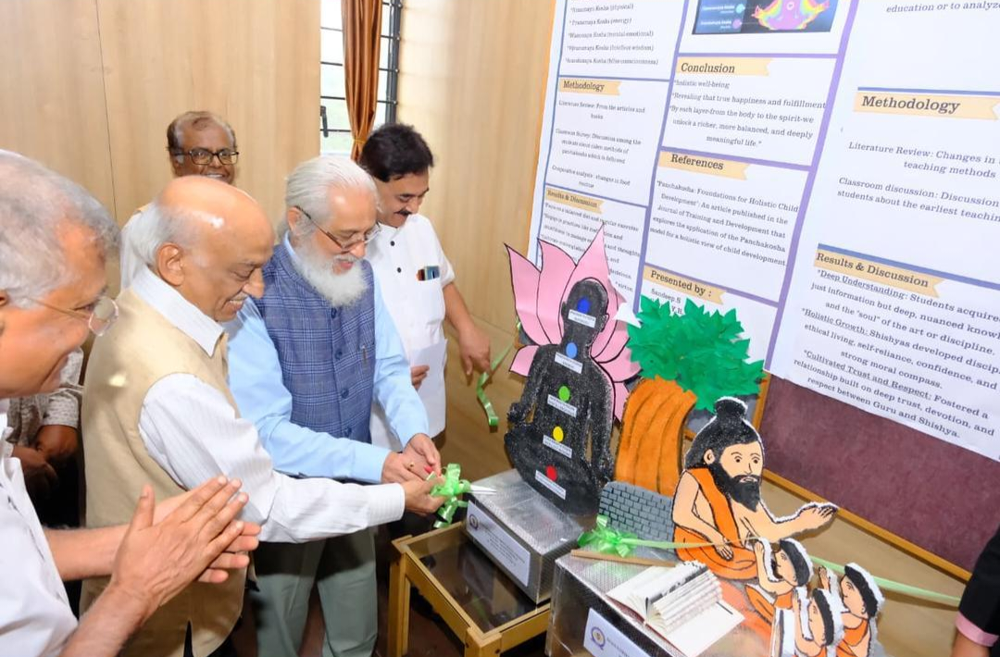
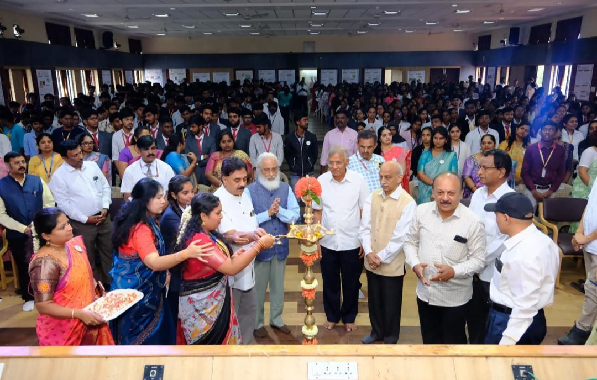
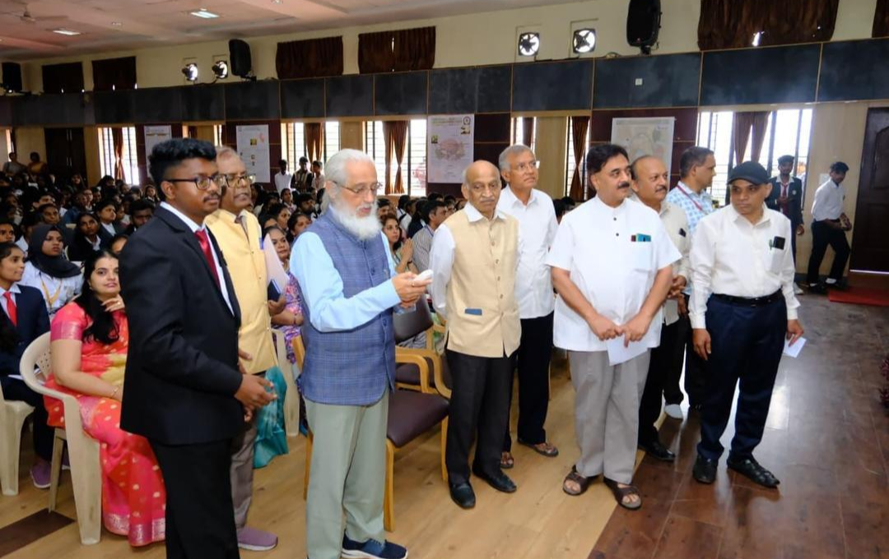
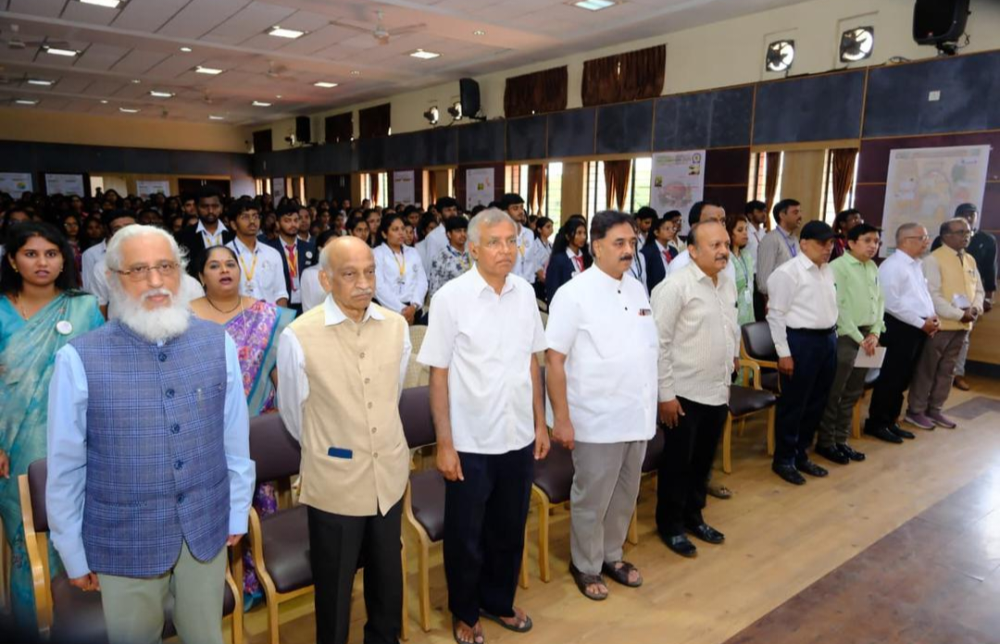
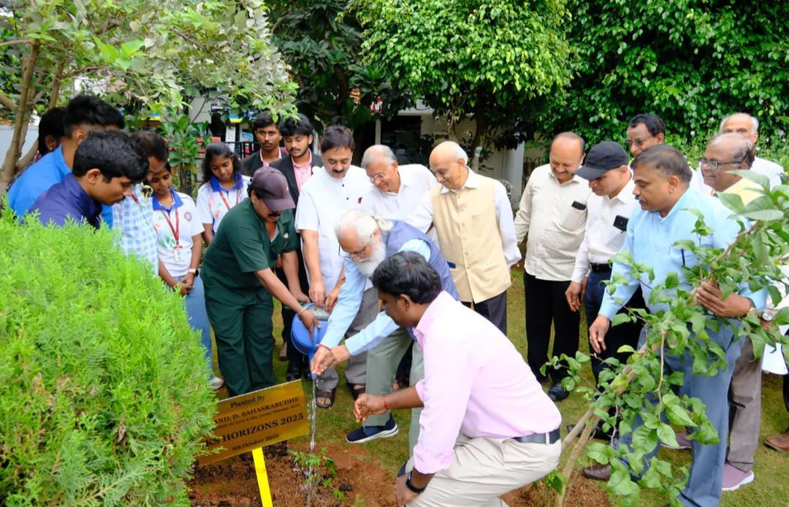
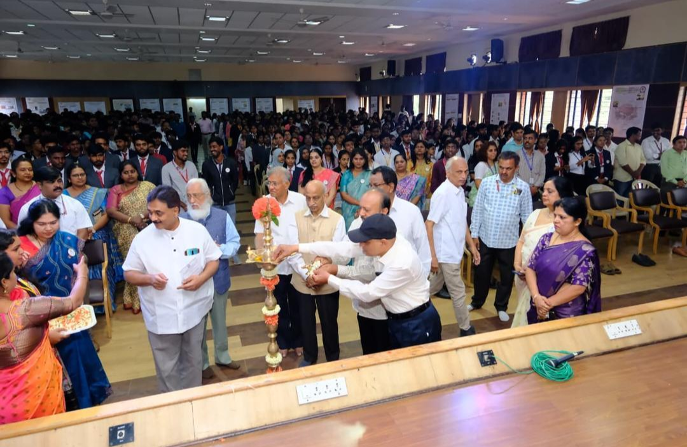
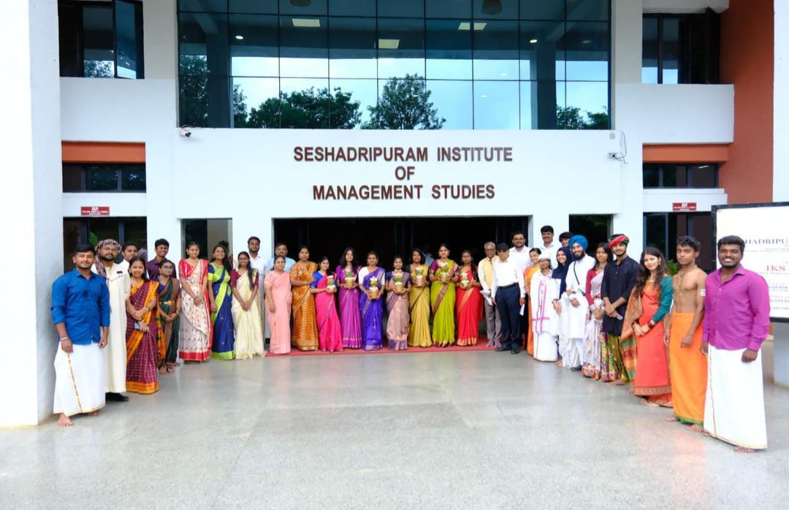
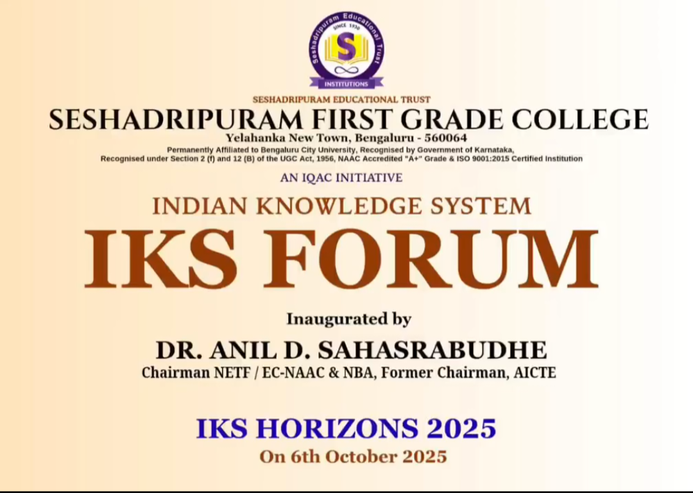
The International Conference - IKS Horizon 2025, organized by the Seshadripuram Research Foundation (SRF) at Seshadripuram First Grade College (SFGC), Yelahanka, stood out as a prestigious academic gathering that celebrated the integration of the Indian Knowledge System (IKS) with contemporary global scholarship. The conference served as a vibrant platform for academicians, researchers, and practitioners to engage in meaningful discussions across disciplines including Science, Technology, Humanities, Commerce, and Management.The conference was graced by the distinguished presence of the Chief Guest, Dr. Anil D. Sahasrabudhe Chairman of NETF/ EC-NAAC & NBA /Former Chairman, AICTE., whose inaugural address set a strong intellectual tone for the event. The Chief Guest emphasized the relevance of Indian knowledge traditions in addressing present-day global challenges and highlighted the need for interdisciplinary research rooted in indigenous wisdom. The keynote insights inspired participants to explore innovative research pathways while preserving the richness of India's intellectual heritage.IKS Horizons 2025 witnessed enthusiastic participation from over 250 delegates, featuring 120 research paper presentations and 80 poster presentations by scholars from reputed institutions across India and abroad. The sessions were marked by dynamic academic exchanges, thought-provoking presentations, and interactive discussions that enriched the research experience of all participants. The hybrid mode of the conference enabled broader outreach and inclusive participation.A major highlight of the conference was the launch of key academic initiatives, including the release of the e-conference proceedings, the introduction of a Seshadripuram Global Journal Multilinguistic (SJGML) Research Journal, and the formal establishment of the IKS Forum at SFGC. These milestones reflect SRF's continued commitment to promoting research excellence, fostering interdisciplinary collaboration, and strengthening the academic ecosystem.Through the successful organization of IKS Horizons 2025, the Seshadripuram Research Foundation reaffirmed its vision of nurturing research that harmoniously blends tradition with innovation. The conference laid a strong foundation for future scholarly collaborations and reinforced SRF's role as a catalyst for knowledge creation and academic leadership.